Cubic Spline Model
See Wood (2017) Generalized Additive Models or my document.
Data Setup
Functions
Cubic spline function.
rk <- function(x, z) {
((z-0.5)^2 - 1/12) * ((x-0.5)^2 - 1/12)/4 -
((abs(x-z)-0.5)^4 - (abs(x-z)-0.5)^2/2 + 7/240) / 24
}Generate the model matrix.
splX <- function(x, knots) {
q = length(knots) + 2 # number of parameters
n = length(x) # number of observations
X = matrix(1, n, q) # initialized model matrix
X[ ,2] = x # set second column to x
X[ ,3:q] = outer(x, knots, FUN = rk) # remaining to cubic spline basis
X
}
splS <- function(knots) {
q = length(knots) + 2
S = matrix(0, q, q) # initialize matrix
S[3:q, 3:q] = outer(knots, knots, FUN = rk) # fill in non-zero part
S
}Matrix square root function. Note that there are various packages with their own.
matSqrt <- function(S) {
d = eigen(S, symmetric = T)
rS = d$vectors %*% diag(d$values^.5) %*% t(d$vectors)
rS
}Penalized fitting function.
prsFit <- function(y, x, knots, lambda) {
q = length(knots) + 2 # dimension of basis
n = length(x) # number of observations
Xa = rbind(splX(x, knots), matSqrt(splS(knots))*sqrt(lambda)) # augmented model matrix
y[(n+1):(n+q)] = 0 # augment the data vector
lm(y ~ Xa - 1) # fit and return penalized regression spline
}Example 1
We start with an unpenalized approach.
knots = 1:4/5
X = splX(x, knots) # generate model matrix
mod1 = lm(wear ~ X - 1) # fit model
xp = 0:100/100 # x values for prediction
Xp = splX(xp, knots) # prediction matrixVisualize
ggplot(aes(x = x, y = wear), data = data.frame(x, wear)) +
geom_point(color = "#FF5500") +
geom_line(aes(x = xp, y = Xp %*% coef(mod1)),
data = data.frame(xp, Xp),
color = "#00AAFF") +
labs(x = 'Scaled Engine size', y = 'Wear Index') +
theme_minimal()
Example 2
Add lambda penalty.
knots = 1:7/8
d2 = data.frame(x = xp)
for (i in c(.1, .01, .001, .0001, .00001, .000001)){
# fit penalized regression
mod2 = prsFit(
y = wear,
x = x,
knots = knots,
lambda = i
)
# spline choosing lambda
Xp = splX(xp, knots) # matrix to map parameters to fitted values at xp
LP = Xp %*% coef(mod2)
d2[, paste0('lambda = ', i)] = LP[, 1]
}Visualize.
d3 = d2 %>%
pivot_longer(cols = -x,
names_to = 'lambda',
values_to = 'value') %>%
mutate(lambda = fct_inorder(lambda))
ggplot(d3) +
geom_point(aes(x = x, y = wear), col = '#FF5500', data = d) +
geom_line(aes(x = x, y = value), col = "#00AAFF") +
facet_wrap(~lambda) +
theme_minimal()
Source
Base R source code found at https://github.com/m-clark/Miscellaneous-R-Code/blob/master/ModelFitting/cubicsplines.R